Receta y Medidas Higienicas...
Ingredientes
1-Sandias

2-Piñas
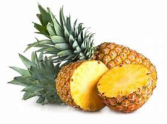
3-Melones
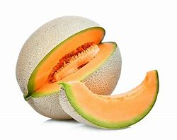
4-Pepinos
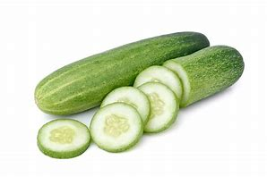
5-Chocolate
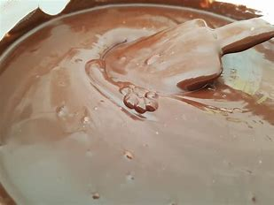
6-Chispitas
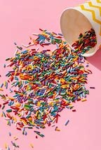
7-Limón
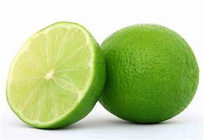
8-Sal
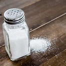
9-Chamoy
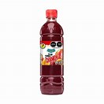
10-Tajín
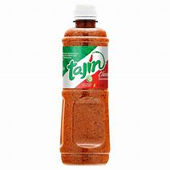
Medida Higienicas
1-Lavar la fruta ante de utilizarla.
2-Tener un secado adecuado.
3-Ponerlo en un almacenamiento correcto.
4-Mantenerla en manipulación segura, tener limpias las manos antes y después de manipular la fruta.
5-Ponernos guantes para manipulación de la fruta
6-Separar la fruta dañada.
7-Partir la fruta en la forma deseada.
8-Colocar la fruta en los platitos en forma de medida higienica.
9-Limpiar y adecuar el lugar de la venta.
10-Preparar de forma higienica para entregar el producto.
11_Picar la fruta en trozos pequeños
12-Agregarle un poco de chocolatico o acidito al gusto.
Ingredientes
1-Sandias
2-Piñas
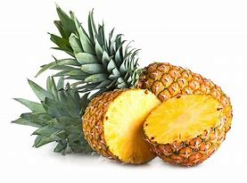
3-Melones
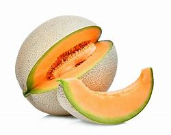4-Pepinos
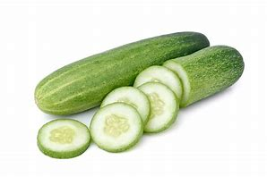5-Chocolate
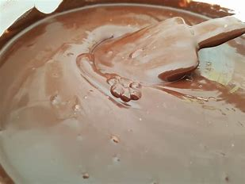6-Chispitas
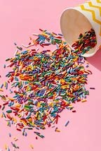7-Limón
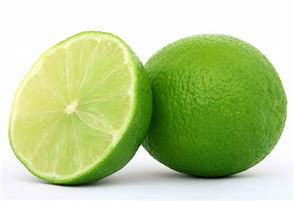8-Sal
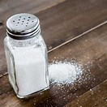9-Chamoy
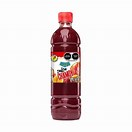10-Tajín
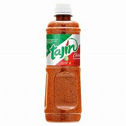
Medida Higienicas
1-Lavar la fruta ante de utilizarla. 2-Tener un secado adecuado. 3-Ponerlo en un almacenamiento correcto. 4-Mantenerla en manipulación segura, tener limpias las manos antes y después de manipular la fruta. 5-Ponernos guantes para manipulación de la fruta 6-Separar la fruta dañada. 7-Partir la fruta en la forma deseada. 8-Colocar la fruta en los platitos en forma de medida higienica. 9-Limpiar y adecuar el lugar de la venta. 10-Preparar de forma higienica para entregar el producto. 11_Picar la fruta en trozos pequeños 12-Agregarle un poco de chocolatico o acidito al gusto.